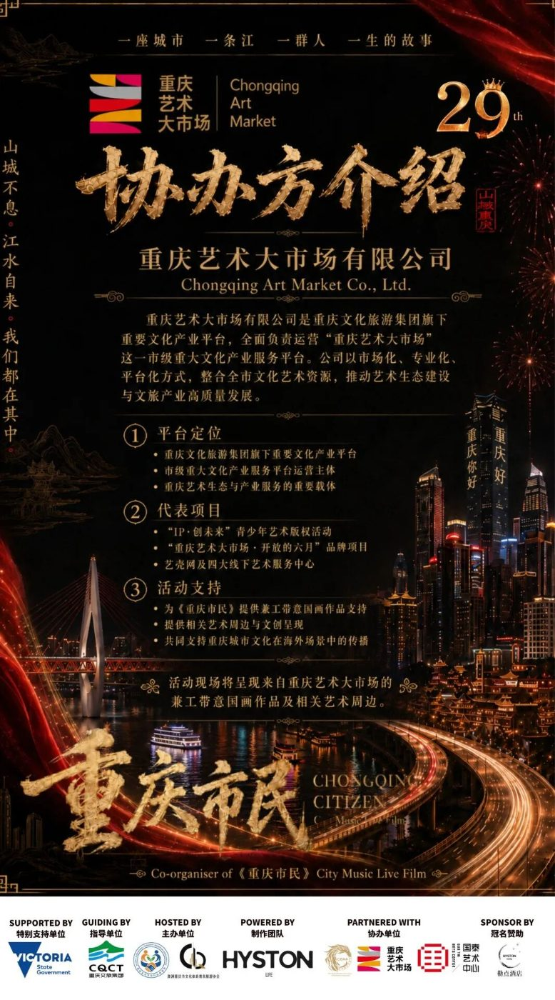
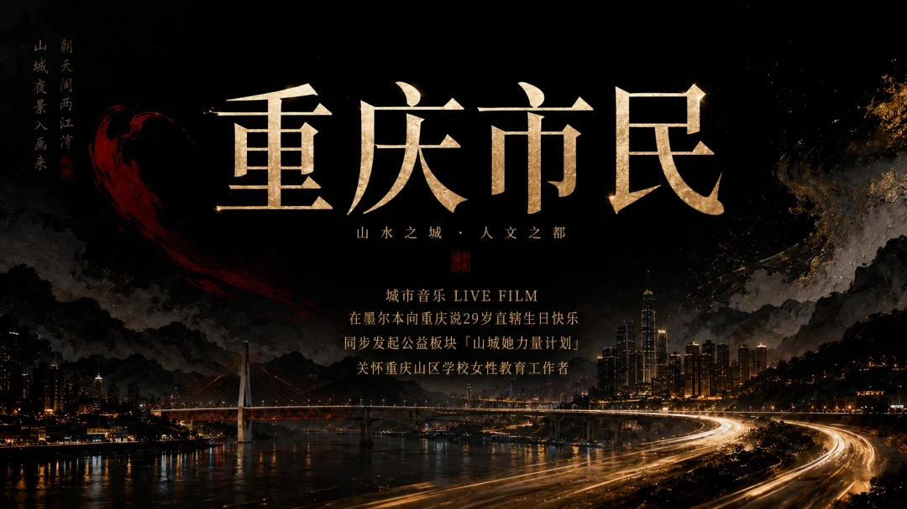

重庆艺术大市场协办《重庆市民》墨尔本城市音Live Film，以艺术出海助力重庆城市文化国际传播

近日，重庆艺术大市场有限公司作为协办单位，参与支持将在澳大利亚墨尔本举办的《重庆市民》城市音乐 Live Film 暨重庆直辖29周年庆祝活动。活动将于2026年6月18日在墨尔本 Chinatown Cinema 举行，并获得 Victoria State Government（澳大利亚维多利亚州州政府）支持。
本次活动以“重庆市民”为核心叙事，以城市音乐 Live Film、重庆城市影像、现场叙事、文化展示与公益联动等形式，面向澳大利亚多元文化社群、华人社团、青年创作者、政商界嘉宾及文化机构代表，呈现一场关于重庆城市记忆、山城精神、青年表达与中澳文化交流的综合性文化现场。
作为重庆文化旅游集团旗下承载全市文化体制改革与“十四五”文化建设的重要文化产业服务平台，重庆艺术大市场始终致力于整合全市文化艺术资源，推动艺术版权、文创开发、艺术展陈、文化消费和艺术服务体系建设。此次参与《重庆市民》墨尔本活动，是重庆艺术大市场推动重庆本土艺术内容走向海外、拓展国际传播场景的一次积极实践。
活动现场，重庆艺术大市场将围绕重庆艺术表达与城市文化传播，呈现兼具传统笔墨精神与当代表达方式的“兼工带意”国画作品及相关文创周边，以艺术作品作为重庆城市气质的视觉入口，让海外观众通过图像、笔墨、文创与现场叙事，感受重庆的山水格局、人文温度与城市精神。
《重庆市民》并非一场传统意义上的演唱会，而是一部以音乐、影像和现场表演共同构成的城市 Live Film。作品以“上篇：山城来信”“下篇：江水回声”为叙事结构，从个人成长、家庭记忆、重庆方言、山城地貌、江水意象与海外身份出发，讲述一位重庆青年从山城走向墨尔本之后，重新理解故乡、重新表达城市的故事。
重庆艺术大市场的加入，使本次活动在音乐影像之外，进一步形成了“城市叙事 + 艺术展陈 + 文创表达 + 国际传播”的多元结构。通过将重庆艺术家作品与重庆青年原创 Live Film 同场呈现，活动不仅让重庆被听见、被看见，也让重庆艺术以更加鲜活、年轻、具象的方式进入海外公共文化现场。
本次活动还将设置公益板块《山城她力量计划》，联动合作品牌及社会资源，以实物、产品或服务形式支持长期在重庆山区学校工作的女性教育工作者。该计划不接受现金形式赞助，不代收捐款，所有物资将由合作品牌或相关单位直接寄送至重庆山区学校，活动方负责资源连接、物资清单登记、品牌鸣谢及后续反馈整理。
重庆艺术大市场相关负责人表示，重庆的艺术出海，不只是作品的海外展示，更是城市文化精神、艺术生态与当代重庆形象的整体传播。未来，重庆艺术大市场将继续发挥平台优势，推动更多重庆艺术家、艺术作品、文创产品和城市文化内容走向国际市场，让重庆艺术在更广阔的文化交流场景中被看见、被理解、被传播。
此次《重庆市民》墨尔本城市音乐 Live Film 活动，将成为重庆艺术大市场探索海外文化传播路径、连接重庆本土艺术资源与澳大利亚多元文化现场的重要节点，也为重庆文化艺术“走出去”提供了新的场景样本。
